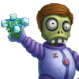

Получено: файл; исходный URL. Исходный файл без перекодирования с альтернативного хоста; идентичность оригинальной ссылке не проверена. Страница: источник.


На грани — Космос
историческая браузерная социальная игра; платформа и редакция уточняются- Тип
- Космическая линейка
- Версия и дата
- историческая браузерная социальная игра; платформа и редакция уточняются
Данные по источнику · браузерная игра; платформа неизвестна · 26.06.2015 — дата статьи, дальнейшие правки не датированы
Предварительно: Фанатское прохождение, редакция и независимая проверка не установлены.. Требуется сверка.
- Цель
- Вырастить 5 Сахарик в Святилище.
- Награда
- Мозги на 7 дней — 1.
Связанные сущности
- Святилище — место события
- Безысходность — Космос — предыдущее задание по источнику
- Поворот — Космос — следующее задание по источнику
- Безысходность — Космос — следующее задание по источнику
- Поворот — Космос — предыдущее задание по источнику